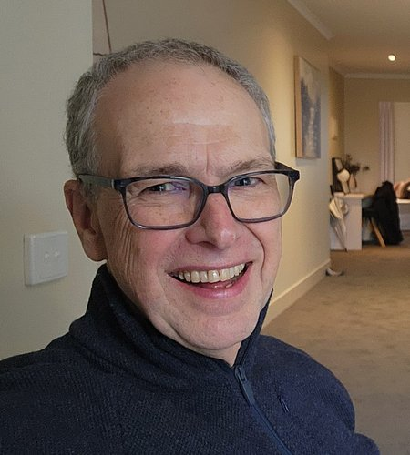

Dr Iain Duncan brings together over 35 years of expertise in musculoskeletal medicine and diagnostic ultrasound to deliver genuinely patient-centred care.

Medical Director, ultrasoundCBR · Bruce, Canberra
About
Dr Iain Duncan is a Diagnostic Imaging Physician with qualifications spanning rheumatology and diagnostic ultrasound. This unique combination enables him to approach musculoskeletal medicine from multiple perspectives — assessing patients clinically and through a wide range of diagnostic tools.
"Part of my job is to make every scan and interaction specific, relevant and worthwhile."
He is passionate about diagnostic imaging as an integral part of patient care — not a standalone test — and thrives working in close collaboration with dedicated clinical teams.
Iain is now Medical Director at ultrasoundCBR in Bruce, Canberra, following a distinguished career and as Founder of Garran Medical Imaging.
Specialties
High-resolution musculoskeletal ultrasound for tendons, joints, soft tissue, and guided injections.
Clinical assessment of arthritis, tendinopathy, osteoporosis, sports injuries, and chronic pain conditions.
Ultrasound-guided corticosteroid, platelet-rich plasma (PRP), and hyaluronic acid injections.
Evidence-based PRP therapy for osteoarthritis, tendinopathy, and soft tissue conditions.
Clinical and imaging assessment focused on osteoarthritis and soft tissue problems.
Research & publications
Iain has contributed widely to research in musculoskeletal medicine and diagnostic ultrasound across his career.
A comprehensive review of the evidence for platelet-rich plasma therapy in osteoarthritis management.
Archive of papers, presentations, and abstracts across diagnostic imaging and musculoskeletal medicine.
Complete list of publications and work accessible via ORCID.
News & updates
An archive of clinical updates, research summaries, and references compiled over many years — covering PRP, ultrasound, nuclear medicine, and more. Browse the archive →
Following a distinguished career and Founder of Garran Medical Imaging, Dr Duncan is now Medical Director at ultrasoundCBR in Bruce, Canberra — a team of outstanding professionals offering comprehensive ultrasound and musculoskeletal services.